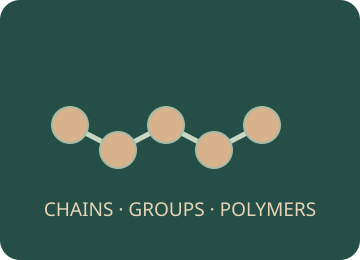

Organic Chemistry
Follow hydrocarbons from a candle and a refinery to functional groups, useful polymers and condensation reactions.

Choose an investigation
Make a prediction, choose the conditions and carry out each action. Record your evidence before answering the explanation question.
Preparing your experiment…
Original apparatus illustrations. Readings follow the stated teaching model; drawings and animation are not measurements.
Record and compare your observations.
Your notebook stays while you explore this page. Reloading clears it. Practical notes and lesson checks are not sent to the teacher.
Use the evidence
Connect the practical to the chemistry
Combustion and its products
Complete combustion of a hydrocarbon forms CO₂ and H₂O. Limited oxygen can produce CO and/or soot as well as water and some CO₂. A candle’s yellow colour alone is not a reliable measure of complete combustion.
Example. CH₄ + 2O₂ → CO₂ + 2H₂O. Anhydrous CuSO₄ turns white to blue in the presence of water; CO₂ turns limewater milky.
Crude oil and fractional distillation
Crude oil is a mixture, mainly of hydrocarbons. Fractional distillation separates by boiling ranges: vapours rise through a hot-bottom, cool-top column. Smaller alkanes tend to be more volatile, less viscous and easier to ignite than larger ones.
Example. A component condenses where the local column temperature falls to its boiling point. Fractions are mixtures with overlapping boiling ranges; distillation does not crack C–C bonds.
Alkanes and alkenes
Acyclic alkanes have CₙH₂ₙ₊₂ and only single carbon–carbon bonds. Acyclic alkenes with one C=C have CₙH₂ₙ. Homologous-series members share characteristic chemistry and differ successively by CH₂.
Example. Butane is C₄H₁₀; butene is C₄H₈. These general formulas are not sufficient to distinguish all possible ring structures or multiple-double-bond compounds.
Cracking and bromine water
Cracking breaks long hydrocarbons into shorter products, often including alkenes. Catalytic cracking uses a hot catalyst; thermal cracking uses different conditions. Alkenes decolourise bromine by addition under the comparison conditions used here.
Example. C₁₀H₂₂ → C₈H₁₈ + C₂H₄. Ethene adds Br₂ to form C₂H₄Br₂. An alkane comparison must specify no UV light; partition into another layer is not chemical decolourisation.
Addition polymers
Alkene double bonds open and monomers join to form a carbon-chain polymer. All monomer atoms are retained and no small molecule is released. Repeat units include substituents; chain ends are normally omitted from the repeat-unit notation.
Example. Ethene gives [–CH₂–CH₂–]ₙ. Propene gives [–CH₂–CH(CH₃)–]ₙ; the CH₃ group stays as a side group.
Alcohols, carboxylic acids and esters
An alcohol contains an –OH group outside a carboxyl group. Carboxylic acids contain –COOH and are commonly weak acids. Esters contain –COO– and can form reversibly from an alcohol and carboxylic acid with acid catalysis.
Example. CH₃COOH + C₂H₅OH ⇌ CH₃COOC₂H₅ + H₂O produces ethyl ethanoate. The alcohol supplies the alkyl part of the ester name.
Amines and amides
Amines contain nitrogen bonded to carbon and/or hydrogen, with a lone pair that can accept H⁺. Amides have nitrogen directly attached to a carbonyl carbon. Lone-pair delocalisation makes amides much less basic than comparable amines.
Example. CH₃NH₂ is methylamine. CH₃CONH₂ is ethanamide. Do not identify every nitrogen-containing compound as an amine.
Polyesters and polyamides
A diol plus a dicarboxylic acid can form a polyester; a diamine plus a dicarboxylic acid can form a polyamide. Two reactive groups per monomer allow chain growth. Water forms in these acid + alcohol/amine condensation routes.
Example. Joining 2n bifunctional monomers into one finite linear chain makes 2n − 1 links and releases 2n − 1 waters. Textbook repeat-unit equations often neglect the two end groups.
Class practicals and further exploration
These activities follow the topics in your syllabus. Use the linked class sheets for your teacher’s practical instructions and reporting requirements. Virtual models complement teacher-supervised practical work.
Ready to test your understanding?
Choose from 80 questions on organic chemistry. Tick your areas and levels, practise with explanations or take a Test yourself quiz, then retry the questions you missed.